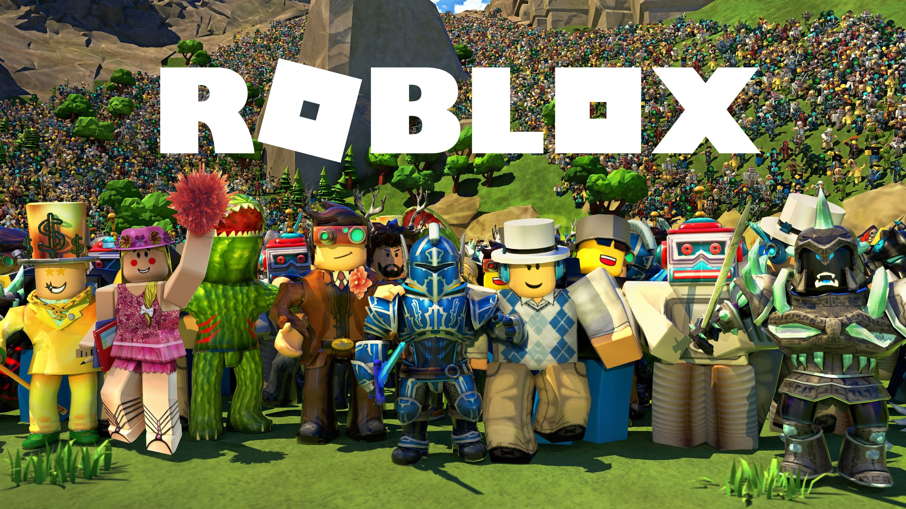
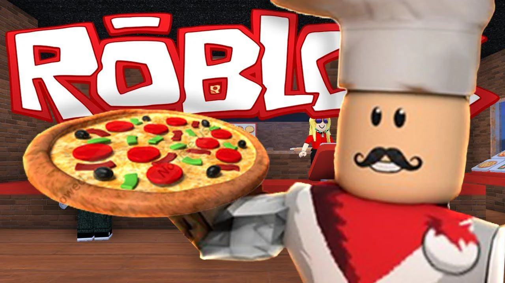

O Roblox é uma plataforma global onde milhões de pessoas se reúnem diariamente para criar, compartilhar e vivenciar experiências em mundos 3D imersivos. Mais do que apenas um jogo, ele funciona como um ecossistema criativo onde os próprios usuários desenvolvem suas próprias aventuras utilizando a ferramenta Roblox Studio. Desde simuladores de vida cotidiana até desafios de parkour complexos, a história do Roblox é escrita pela imaginação infinita de sua imensa comunidade ativa.

Dicas do game
Para progredir no Roblox, a primeira dica essencial é explorar diferentes gêneros para entender as mecânicas de movimentação e interação, que podem variar de um mapa para outro. Muitos jogos recompensam o "login" diário, então entrar no game regularmente ajuda a acumular moedas e itens que facilitam a evolução do seu personagem sem custos adicionais.
Outro ponto importante é interagir com a comunidade e observar jogadores mais experientes; muitos mapas possuem segredos ou atalhos que só são descobertos através da observação ou colaboração em equipe. Além disso, fique atento aos códigos promocionais (promocodes) que os desenvolvedores costumam liberar nas redes sociais para ganhar acessórios exclusivos.
Por fim, sempre verifique a descrição e o tutorial de cada "experiência" antes de começar, pois isso economiza tempo precioso de aprendizado. Dominar os comandos de teclado no PC ou os gestos na tela do celular é o que diferencia um iniciante de um mestre nos desafios de agilidade e estratégia que a plataforma oferece.

Novidades desta versão do game
A versão mais recente do Roblox trouxe melhorias significativas na engine gráfica, permitindo texturas mais realistas e sistemas de iluminação dinâmica que tornam os mundos ainda mais vibrantes. O sistema de avatares também foi atualizado com as "Layered Clothing", permitindo que as roupas se ajustem de forma natural a qualquer tipo de corpo de personagem.
Outra grande novidade é a implementação de chat de voz por proximidade, que permite uma imersão muito maior ao conversar com amigos que estão perto do seu avatar dentro das experiências. Isso mudou a forma como o roleplay acontece, tornando as interações sociais muito mais orgânicas e divertidas para os usuários verificados.
Além disso, as ferramentas de criação no Roblox Studio foram otimizadas com auxílio de inteligência artificial para ajudar novos desenvolvedores a programar scripts de forma mais rápida. Houve também uma expansão nos servidores globais, garantindo que jogadores do mundo todo tenham menos latência (lag) durante as partidas competitivas mais intensas.